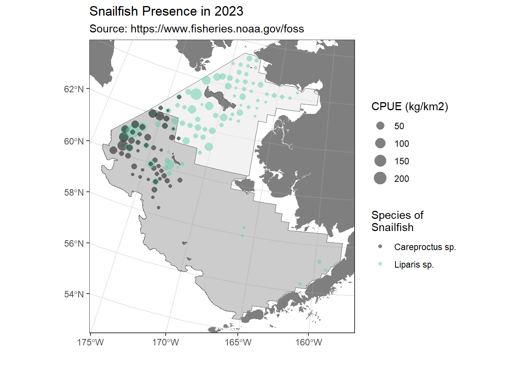
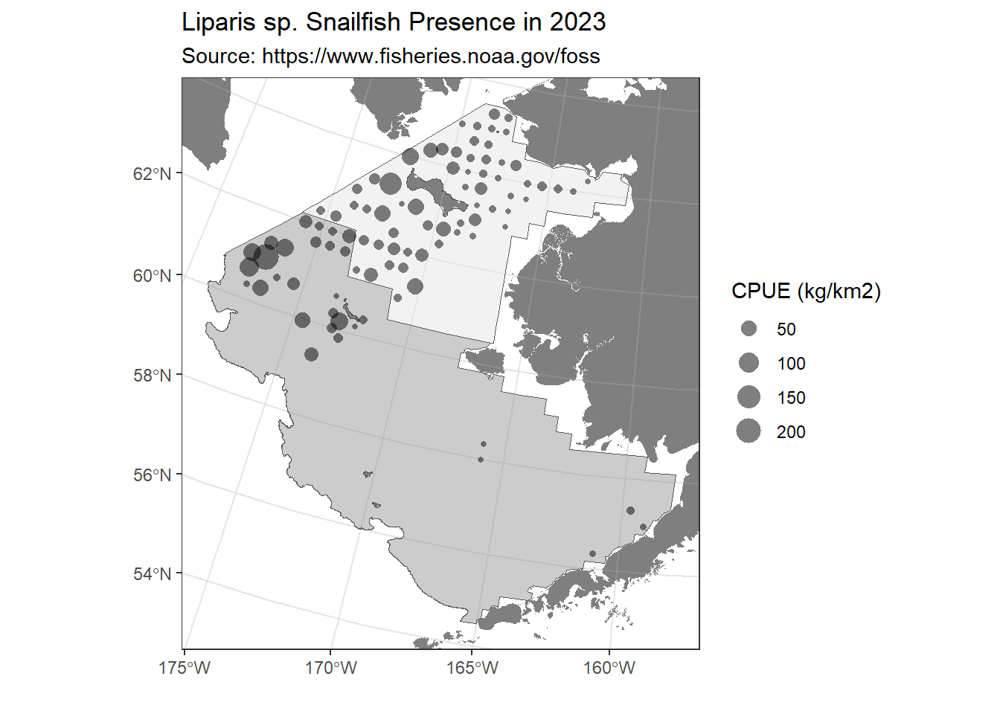
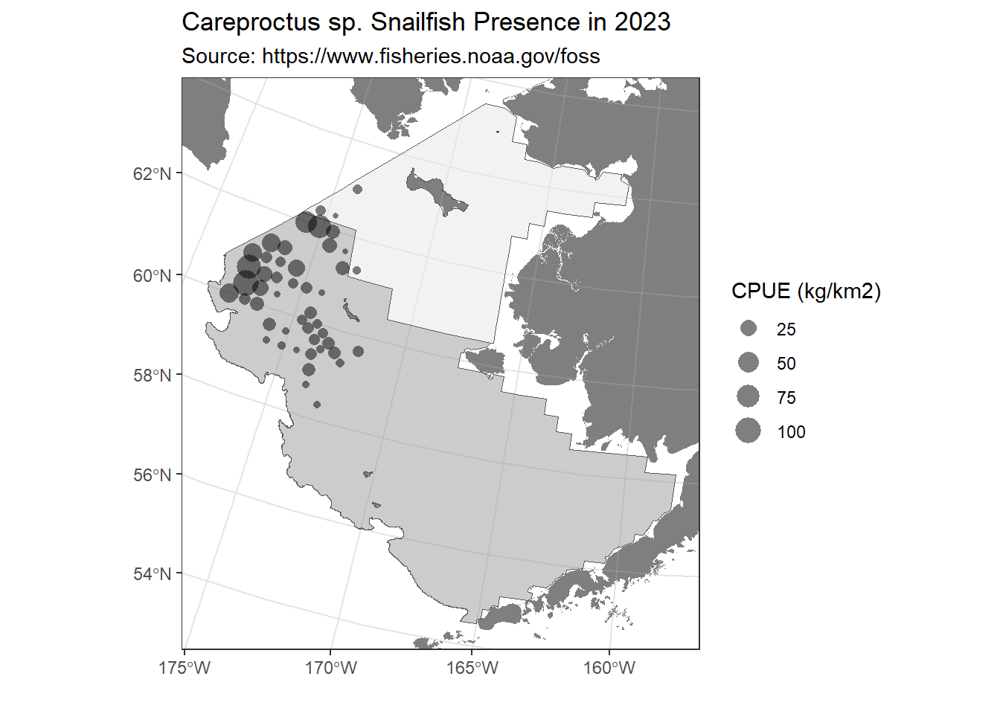

Snailfish found in the Eastern Bering Sea in 2023
DRAFT: December 24, 2024
This report compares the distribution and relative abundance of 2 snailfish species (specifically, Liparis sp., Careproctus sp.; Figure 1) with maps from the 2023 in the eastern Bering sea shelf bottom trawl survey. Survey results reported herein include estimates of catch-per-unit-effort for most snailfishes and geographic distributions (Figure 2); Markowitz et al. (2024)). In 2023, snail fish were caught at 120 stations. Data is publicly available from the Fisheries One Stop Shop (NOAA Fisheries Alaska Fisheries Science Center, 2024).

Methods
Quarto has support for some fancy accessories that are helpful for reports. For example, you can create flowcharts using tools like {mermaid}.
flowchart LR
A[Survey data] --> B(Processed data products)
B --> C{R code and Markdown}
C --> D[Presentations]
C --> E[Data process reports]
Species chapters
Liparis sp.
The geographic distribution of Liparis sp. (species code: 22201) (Figure 3), and the raw data that went into that map (Table 1).

| stratum | station | vessel_name | date_time | cpue_kgkm2 | cpue_nokm2 | weight_kg | count | bottom_temperature_c | surface_temperature_c | depth_m | geometry |
|---|---|---|---|---|---|---|---|---|---|---|---|
| 70 | W-19 | NORTHWEST EXPLORER | 2023-08-13T07:55:53Z | 4.26 | 62.62 | 0.20 | 3 | 1.9 | 7.2 | 36 | c(-798176.955475143, 1468532.8125249) |
| 81 | W-27 | ALASKA KNIGHT | 2023-08-03T14:16:52Z | 5.58 | 70.86 | 0.32 | 4 | -1.6 | 10.1 | 78 | c(-1081799.39549085, 1548136.12775587) |
| 81 | W-26 | ALASKA KNIGHT | 2023-08-03T17:10:27Z | 15.59 | 111.88 | 0.84 | 6 | -1.6 | 9.9 | 70 | c(-1047810.42879229, 1536033.06795484) |
| 71 | BB-22 | ALASKA KNIGHT | 2023-08-04T11:28:47Z | 61.68 | 280.25 | 2.86 | 13 | -0.1 | 9.8 | 53 | c(-869360.481123262, 1678065.50080261) |
| 71 | BB-19 | ALASKA KNIGHT | 2023-08-05T17:52:54Z | 27.95 | 303.54 | 1.29 | 14 | 3.2 | 5.9 | 34 | c(-765685.704542413, 1650005.58639016) |
| 71 | AA-18 | ALASKA KNIGHT | 2023-08-06T11:16:30Z | 0.48 | 65.10 | 0.02 | 3 | 2.7 | 8.7 | 36 | c(-736844.834697473, 1604711.78921147) |
| 71 | BB-18 | ALASKA KNIGHT | 2023-08-06T13:53:54Z | 0.04 | 22.06 | 0.00 | 1 | 2.4 | 7.9 | 36 | c(-729284.256735709, 1641406.47156339) |
| 71 | CC-18 | ALASKA KNIGHT | 2023-08-06T18:05:53Z | 2.78 | 157.17 | 0.12 | 7 | 1.5 | 7.1 | 40 | c(-723638.551163895, 1675399.17954757) |
| 71 | DD-18 | ALASKA KNIGHT | 2023-08-07T08:08:48Z | 8.32 | 235.94 | 0.39 | 11 | 1.3 | 7.1 | 43 | c(-715179.347629753, 1715835.84300911) |
| 71 | CC-19 | ALASKA KNIGHT | 2023-08-07T13:58:08Z | 14.41 | 92.65 | 0.62 | 4 | 0.7 | 4.5 | 40 | c(-757578.582092834, 1689301.3042907) |
| 71 | CC-20 | ALASKA KNIGHT | 2023-08-07T16:38:20Z | 22.80 | 81.43 | 0.84 | 3 | 1.0 | 7.1 | 37 | c(-792089.52338498, 1696198.31899514) |
| 71 | CC-21 | ALASKA KNIGHT | 2023-08-07T19:53:26Z | 40.17 | 191.84 | 1.68 | 8 | 2.6 | 8.4 | 40 | c(-817729.392624811, 1692687.34666956) |
| 71 | EE-19 | ALASKA KNIGHT | 2023-08-08T11:26:30Z | 0.58 | 20.89 | 0.03 | 1 | 1.2 | 6.9 | 48 | c(-743853.567005704, 1757610.88872253) |
| 71 | EE-18 | ALASKA KNIGHT | 2023-08-08T13:58:57Z | 3.88 | 65.34 | 0.18 | 3 | 1.3 | 8.1 | 49 | c(-708637.135133825, 1752588.7221226) |
| 71 | FF-01 | ALASKA KNIGHT | 2023-08-09T08:06:03Z | 13.82 | 206.68 | 0.60 | 9 | 4.0 | 9.6 | 53 | c(-666429.321315828, 1781108.27305484) |
| 71 | FF-02 | ALASKA KNIGHT | 2023-08-09T11:14:11Z | 2.50 | 49.06 | 0.10 | 2 | 8.7 | 9.1 | 38 | c(-633495.448535639, 1772375.65661548) |
| 71 | EE-02 | ALASKA KNIGHT | 2023-08-09T14:25:56Z | 0.90 | 125.60 | 0.04 | 5 | 7.7 | 7.8 | 34 | c(-638083.142493351, 1738487.17628366) |
| 71 | EE-01 | ALASKA KNIGHT | 2023-08-09T17:16:13Z | 1.81 | 64.58 | 0.08 | 3 | 2.2 | 9.1 | 45 | c(-671721.065185622, 1745202.37895433) |
| 71 | DD-01 | ALASKA KNIGHT | 2023-08-10T08:08:27Z | 2.94 | 124.47 | 0.12 | 5 | 1.7 | 8.4 | 39 | c(-680625.4177761, 1707543.42850548) |
| 71 | CC-03 | ALASKA KNIGHT | 2023-08-10T18:02:16Z | 16.46 | 255.06 | 0.71 | 11 | 7.5 | 9.2 | 30 | c(-615748.46345555, 1658036.88549188) |
| 71 | CC-02 | ALASKA KNIGHT | 2023-08-11T08:04:58Z | 0.63 | 72.34 | 0.03 | 3 | 6.2 | 8.2 | 31 | c(-648912.6532643, 1664136.58948505) |
| 71 | CC-01 | ALASKA KNIGHT | 2023-08-11T12:09:14Z | 8.19 | 76.31 | 0.32 | 3 | 1.3 | 8.0 | 39 | c(-686932.097811844, 1671786.69437241) |
| 71 | BB-01 | ALASKA KNIGHT | 2023-08-11T14:31:00Z | 3.82 | 71.62 | 0.16 | 3 | 1.6 | 9.3 | 36 | c(-692796.713637233, 1637177.21287845) |
| 71 | AA-01 | ALASKA KNIGHT | 2023-08-11T17:00:29Z | 22.25 | 385.23 | 0.92 | 16 | 2.8 | 5.4 | 33 | c(-699219.48570086, 1601165.63762097) |
| 70 | Y-01 | ALASKA KNIGHT | 2023-08-12T08:05:52Z | 22.10 | 53.37 | 0.83 | 2 | 3.0 | 7.6 | 39 | c(-712479.019034663, 1526892.7425337) |
| 70 | Y-18 | ALASKA KNIGHT | 2023-08-12T10:48:24Z | 1.34 | 182.22 | 0.06 | 8 | 2.1 | 8.3 | 39 | c(-746349.17657022, 1518161.16564076) |
| 70 | X-19 | ALASKA KNIGHT | 2023-08-12T13:47:06Z | 42.83 | 544.26 | 1.81 | 23 | 0.8 | 8.3 | 40 | c(-787366.074243404, 1504619.89452987) |
| 70 | X-20 | ALASKA KNIGHT | 2023-08-12T16:36:34Z | 12.73 | 20.33 | 0.63 | 1 | 0.2 | 8.2 | 42 | c(-824878.947892557, 1512840.24812618) |
| 70 | Y-21 | ALASKA KNIGHT | 2023-08-13T08:05:52Z | 53.13 | 195.96 | 2.44 | 9 | 0.0 | 8.4 | 47 | c(-854918.951089754, 1557925.42143379) |
| 70 | Y-22 | ALASKA KNIGHT | 2023-08-13T10:53:48Z | 0.21 | 20.82 | 0.01 | 1 | -0.8 | 7.9 | 52 | c(-887905.418616366, 1565038.18380899) |
| 10 | E-12 | ALASKA KNIGHT | 2023-05-28T15:56:41Z | 0.30 | 63.96 | 0.01 | 3 | 4.0 | 4.2 | 54 | c(-431135.826971972, 725920.201176662) |
| 10 | H-14 | ALASKA KNIGHT | 2023-05-30T07:29:17Z | 2.59 | 21.98 | 0.12 | 1 | 3.6 | 3.9 | 56 | c(-340063.251075136, 828595.089217144) |
| 81 | ZZ-23 | ALASKA KNIGHT | 2023-08-13T15:29:54Z | 138.01 | 167.79 | 6.58 | 8 | 0.0 | 7.8 | 63 | c(-915508.130705805, 1613190.9757773) |
| 81 | ZZ-24 | ALASKA KNIGHT | 2023-08-13T18:12:37Z | 13.24 | 256.34 | 0.62 | 12 | -1.3 | 8.2 | 70 | c(-953502.939663255, 1625506.82658933) |
| 81 | Y-25 | ALASKA KNIGHT | 2023-08-14T08:23:34Z | 12.44 | 94.55 | 0.66 | 5 | -1.5 | 8.1 | 74 | c(-995888.792344013, 1600147.5601938) |
| 81 | X-25 | ALASKA KNIGHT | 2023-08-14T11:05:02Z | 5.35 | 83.55 | 0.26 | 4 | -1.6 | 8.6 | 68 | c(-1002342.8221503, 1561433.54932788) |
| 81 | X-24 | ALASKA KNIGHT | 2023-08-15T13:03:43Z | 5.04 | 44.17 | 0.11 | 1 | -1.5 | 9.5 | 65 | c(-971304.727687545, 1552729.40465322) |
| 81 | X-23 | ALASKA KNIGHT | 2023-08-15T15:28:45Z | 53.43 | 59.81 | 2.68 | 3 | -1.1 | 9.2 | 54 | c(-934858.651842778, 1541779.41688125) |
| 81 | W-22 | ALASKA KNIGHT | 2023-08-16T10:47:40Z | 9.95 | 23.25 | 0.43 | 1 | -0.4 | 8.6 | 47 | c(-907246.350520944, 1495207.35770502) |
| 70 | V-20 | ALASKA KNIGHT | 2023-08-16T18:26:59Z | 26.95 | 21.80 | 1.24 | 1 | 0.6 | 9.0 | 46 | c(-840317.087538137, 1440797.70734891) |
| 70 | V-21 | ALASKA KNIGHT | 2023-08-17T08:17:10Z | 6.47 | 21.13 | 0.31 | 1 | 0.3 | 8.8 | 50 | c(-873836.627325402, 1448260.93667545) |
| 70 | V-22 | ALASKA KNIGHT | 2023-08-17T11:15:01Z | 24.72 | 21.65 | 1.14 | 1 | -0.2 | 9.4 | 52 | c(-907958.317563131, 1457124.500239) |
| 81 | V-23 | ALASKA KNIGHT | 2023-08-17T14:16:10Z | 9.96 | 19.35 | 0.52 | 1 | -0.8 | 9.3 | 55 | c(-944003.284364556, 1467018.90782417) |
| 81 | V-24 | ALASKA KNIGHT | 2023-08-17T17:13:35Z | 10.65 | 20.47 | 0.52 | 1 | -1.1 | 9.6 | 58 | c(-979889.235792293, 1477756.21619332) |
| 81 | T-24 | ALASKA KNIGHT | 2023-08-18T08:29:26Z | 1.69 | 21.16 | 0.08 | 1 | -1.0 | 8.3 | 69 | c(-997530.084274805, 1405055.17880662) |
| 81 | T-23 | ALASKA KNIGHT | 2023-08-18T11:00:01Z | 37.97 | 19.47 | 1.95 | 1 | -0.8 | 8.9 | 63 | c(-963434.348050515, 1394881.8155102) |
| 81 | U-22 | ALASKA KNIGHT | 2023-08-18T16:27:08Z | 8.36 | 21.88 | 0.38 | 1 | -0.1 | 9.2 | 55 | c(-917891.33146377, 1418108.58869716) |
| 81 | U-21 | ALASKA KNIGHT | 2023-08-18T19:05:07Z | 11.59 | 22.13 | 0.52 | 1 | 0.3 | 8.6 | 50 | c(-883736.9299901, 1411954.43589989) |
| 81 | S-21 | ALASKA KNIGHT | 2023-08-19T08:26:43Z | 4.06 | 22.30 | 0.18 | 1 | -0.8 | 9.2 | 54 | c(-898347.201645771, 1339024.19367541) |
| 70 | T-20 | ALASKA KNIGHT | 2023-08-19T11:43:59Z | 53.95 | 43.37 | 2.49 | 2 | 0.1 | 8.2 | 47 | c(-855604.452374731, 1366159.56484239) |
| 41 | R-25 | ALASKA KNIGHT | 2023-07-18T10:35:19Z | 0.10 | 79.75 | 0.00 | 4 | -1.2 | 8.8 | 65 | c(-1045303.74314603, 1343144.60727534) |
| 43 | Q-25 | ALASKA KNIGHT | 2023-07-18T13:23:42Z | 12.72 | 170.34 | 0.67 | 9 | -0.9 | 9.3 | 61 | c(-1051595.65537717, 1302600.97886815) |
| 43 | QP2524 | ALASKA KNIGHT | 2023-07-18T15:36:29Z | 70.25 | 173.87 | 3.64 | 9 | -0.8 | 7.5 | 59 | c(-1037928.39696936, 1282844.62450493) |
| 43 | P-25 | ALASKA KNIGHT | 2023-07-18T17:45:22Z | 11.83 | 35.84 | 0.66 | 2 | -0.8 | 9.5 | 74 | c(-1055646.30886507, 1266881.85284795) |
| 62 | P-27 | ALASKA KNIGHT | 2023-07-20T16:06:58Z | 51.43 | 20.85 | 2.47 | 1 | 1.1 | 9.4 | 107 | c(-1126757.13145064, 1286716.42299299) |
| 62 | N-26 | ALASKA KNIGHT | 2023-07-21T13:22:04Z | 34.97 | 19.48 | 1.79 | 1 | 1.8 | 9.5 | 110 | c(-1106560.04722318, 1204035.93401308) |
| 61 | Q-31 | ALASKA KNIGHT | 2023-07-24T13:55:10Z | 0.86 | 20.56 | 0.04 | 1 | 1.8 | 9.0 | 147 | c(-1260299.61186718, 1373484.79011675) |
| 61 | Q-30 | ALASKA KNIGHT | 2023-07-24T16:49:58Z | 57.66 | 19.19 | 3.00 | 1 | 1.7 | 9.8 | 136 | c(-1227639.73118902, 1362304.58211861) |
| 61 | R-31 | ALASKA KNIGHT | 2023-07-25T10:35:11Z | 89.65 | 36.67 | 4.89 | 2 | 1.5 | 10.3 | 145 | c(-1254603.29763949, 1411960.18297856) |
| 90 | S-31 | ALASKA KNIGHT | 2023-07-25T13:17:58Z | 69.27 | 42.14 | 3.29 | 2 | 1.4 | 10.3 | 134 | c(-1246733.63819606, 1448232.80858894) |
| 90 | S-30 | ALASKA KNIGHT | 2023-07-25T16:06:01Z | 219.27 | 103.39 | 10.60 | 5 | 1.2 | 9.6 | 121 | c(-1213500.90768201, 1436247.65683075) |
| 82 | V-25 | ALASKA KNIGHT | 2023-07-31T09:24:34Z | 35.28 | 79.46 | 1.78 | 4 | -1.4 | 10.1 | 62 | c(-1015584.94673253, 1487298.29005516) |
| 82 | U-25 | ALASKA KNIGHT | 2023-07-31T12:06:12Z | 12.67 | 59.94 | 0.63 | 3 | -1.4 | 9.7 | 69 | c(-1022965.98073792, 1451007.10015484) |
| 82 | U-26 | ALASKA KNIGHT | 2023-07-31T15:09:50Z | 8.95 | 120.47 | 0.45 | 6 | -1.6 | 10.5 | 76 | c(-1061963.9500614, 1463739.26368698) |
| 90 | T-29 | ALASKA KNIGHT | 2023-08-01T13:29:18Z | 69.27 | 19.57 | 3.54 | 1 | 0.3 | 10.7 | 108 | c(-1167596.43794438, 1459617.92289903) |
| 90 | T-30 | ALASKA KNIGHT | 2023-08-01T16:08:44Z | 33.45 | 20.42 | 1.64 | 1 | 0.5 | 10.3 | 117 | c(-1201531.20996127, 1471850.43352086) |
| 82 | U-27 | ALASKA KNIGHT | 2023-08-02T15:06:00Z | 13.07 | 19.92 | 0.66 | 1 | -1.1 | 10.2 | 85 | c(-1095110.60715604, 1473876.33687206) |
| 82 | V-26 | ALASKA KNIGHT | 2023-08-02T19:18:08Z | 6.23 | 74.13 | 0.34 | 4 | -1.6 | 10.2 | 74 | c(-1054204.41580558, 1498301.1148475) |
| 82 | V-27 | ALASKA KNIGHT | 2023-08-03T08:16:52Z | 5.68 | 73.81 | 0.31 | 4 | -1.6 | 9.7 | 81 | c(-1086957.66226935, 1511399.56357585) |
| 82 | V-28 | ALASKA KNIGHT | 2023-08-03T10:46:16Z | 29.99 | 66.42 | 1.81 | 4 | -1.3 | 9.7 | 91 | c(-1118547.45610197, 1521749.60934243) |
| 10 | G-15 | NORTHWEST EXPLORER | 2023-05-29T07:22:29Z | 0.93 | 103.88 | 0.04 | 4 | 4.4 | 4.5 | 36 | c(-310317.767021512, 790132.715043053) |
| 10 | J-04 | NORTHWEST EXPLORER | 2023-06-16T16:19:21Z | 0.04 | 21.12 | 0.00 | 1 | 0.2 | 3.3 | 53 | c(-699037.378856224, 951491.361636166) |
| 10 | K-04 | NORTHWEST EXPLORER | 2023-06-17T07:07:46Z | 0.24 | 65.32 | 0.01 | 3 | 2.2 | 2.2 | 44 | c(-691950.124506363, 988375.699230032) |
| 43 | Q-23 | NORTHWEST EXPLORER | 2023-07-13T15:55:31Z | 5.91 | 20.37 | 0.29 | 1 | -1.1 | 7.7 | 60 | c(-981283.19231435, 1286409.09333342) |
| 43 | QP2423 | NORTHWEST EXPLORER | 2023-07-14T07:25:21Z | 0.09 | 22.67 | 0.00 | 1 | 1.1 | 4.2 | 58 | c(-1000353.752244, 1270694.70161921) |
| 43 | PO2524 | NORTHWEST EXPLORER | 2023-07-17T10:32:21Z | 8.45 | 19.37 | 0.44 | 1 | -0.6 | 7.9 | 80 | c(-1041955.12427569, 1243346.06151804) |
| 61 | R-29 | NORTHWEST EXPLORER | 2023-07-24T07:38:34Z | 1.80 | 19.99 | 0.09 | 1 | 1.1 | 9.4 | 119 | c(-1188143.60576935, 1388420.75738892) |
| 61 | R-28 | NORTHWEST EXPLORER | 2023-07-24T10:46:59Z | 24.07 | 20.16 | 1.19 | 1 | 0.4 | 9.4 | 107 | c(-1149307.49792401, 1374327.43907051) |
| 71 | CC-08 | NORTHWEST EXPLORER | 2023-07-30T07:28:49Z | 0.24 | 24.07 | 0.01 | 1 | 4.0 | 14.1 | 21 | c(-442303.102828588, 1617661.83469413) |
| 71 | BB-07 | NORTHWEST EXPLORER | 2023-07-31T12:46:27Z | 0.64 | 22.94 | 0.03 | 1 | 6.0 | 12.8 | 20 | c(-477968.308261796, 1594907.67194634) |
| 71 | BB-06 | NORTHWEST EXPLORER | 2023-08-01T13:05:12Z | 6.28 | 46.18 | 0.27 | 2 | 8.4 | 12.4 | 19 | c(-513260.720091391, 1600439.73150838) |
| 71 | BB-05 | NORTHWEST EXPLORER | 2023-08-01T16:34:16Z | 6.83 | 47.76 | 0.29 | 2 | 9.6 | 9.7 | 18 | c(-551966.553978572, 1607533.87495225) |
| 71 | AA-04 | NORTHWEST EXPLORER | 2023-08-03T07:25:15Z | 0.04 | 21.82 | 0.00 | 1 | 5.9 | 9.4 | 28 | c(-590748.703846792, 1575547.95567288) |
| 71 | BB-04 | NORTHWEST EXPLORER | 2023-08-03T10:35:29Z | 2.21 | 25.13 | 0.09 | 1 | 6.5 | 9.4 | 23 | c(-585931.673275535, 1612430.63015626) |
| 71 | BB-02 | NORTHWEST EXPLORER | 2023-08-09T12:17:13Z | 0.41 | 45.55 | 0.02 | 2 | 3.8 | 6.9 | 34 | c(-657695.146912263, 1627423.48507266) |
| 71 | AA-03 | NORTHWEST EXPLORER | 2023-08-10T07:34:58Z | 1.04 | 151.22 | 0.05 | 7 | 5.9 | 7.8 | 29 | c(-627045.844759388, 1584045.18067718) |
| 71 | ZZ-03 | NORTHWEST EXPLORER | 2023-08-10T11:32:02Z | 0.10 | 40.60 | 0.00 | 2 | 6.4 | 8.7 | 28 | c(-632278.272409157, 1546256.06244677) |
| 71 | ZZ-02 | NORTHWEST EXPLORER | 2023-08-10T14:40:34Z | 1.19 | 45.89 | 0.05 | 2 | 5.1 | 7.6 | 33 | c(-670807.065817181, 1552722.74205652) |
| 70 | Y-03 | NORTHWEST EXPLORER | 2023-08-11T07:37:32Z | 0.04 | 21.45 | 0.00 | 1 | 8.7 | 9.5 | 29 | c(-639894.321431667, 1509176.731749) |
| 71 | ZZ-01 | NORTHWEST EXPLORER | 2023-08-11T15:55:42Z | 0.23 | 46.92 | 0.01 | 2 | 4.3 | 7.8 | 31 | c(-707144.895062262, 1561366.40572099) |
| 70 | X-18 | NORTHWEST EXPLORER | 2023-08-12T07:33:38Z | 0.33 | 46.97 | 0.01 | 2 | 2.3 | 8.4 | 36 | c(-756044.479534408, 1495906.62838601) |
| 70 | X-01 | NORTHWEST EXPLORER | 2023-08-12T10:33:29Z | 0.49 | 91.67 | 0.02 | 3 | 3.2 | 7.7 | 34 | c(-718842.425046866, 1488314.82294364) |
Careproctus sp.
The geographic distribution of Careproctus sp. (species code: 22219) (Figure 4), and the raw data that went into that map (Table 2).

| stratum | station | vessel_name | date_time | cpue_kgkm2 | cpue_nokm2 | weight_kg | count | bottom_temperature_c | surface_temperature_c | depth_m | geometry |
|---|---|---|---|---|---|---|---|---|---|---|---|
| 81 | W-27 | ALASKA KNIGHT | 2023-08-03T14:16:52Z | 5.49 | 35.43 | 0.31 | 2 | -1.6 | 10.1 | 78 | c(-1081799.39549085, 1548136.12775587) |
| 81 | W-26 | ALASKA KNIGHT | 2023-08-03T17:10:27Z | 0.11 | 18.65 | 0.01 | 1 | -1.6 | 9.9 | 70 | c(-1047810.42879229, 1536033.06795484) |
| 81 | Y-25 | ALASKA KNIGHT | 2023-08-14T08:23:34Z | 3.10 | 18.91 | 0.16 | 1 | -1.5 | 8.1 | 74 | c(-995888.792344013, 1600147.5601938) |
| 81 | T-24 | ALASKA KNIGHT | 2023-08-18T08:29:26Z | 1.27 | 84.64 | 0.06 | 4 | -1.0 | 8.3 | 69 | c(-997530.084274805, 1405055.17880662) |
| 61 | K-25 | ALASKA KNIGHT | 2023-07-11T07:47:48Z | 0.69 | 20.15 | 0.03 | 1 | 2.9 | 8.8 | 108 | c(-1091008.85154432, 1082716.79364208) |
| 43 | P-26 | ALASKA KNIGHT | 2023-07-19T08:09:00Z | 3.27 | 38.95 | 0.17 | 2 | 0.4 | 9.7 | 96 | c(-1091484.25196877, 1277217.435913) |
| 43 | QP2726 | ALASKA KNIGHT | 2023-07-19T17:05:57Z | 10.20 | 39.69 | 0.51 | 2 | 0.5 | 9.7 | 99 | c(-1107632.27869742, 1303861.4636273) |
| 43 | PO2625 | ALASKA KNIGHT | 2023-07-20T07:43:21Z | 5.17 | 19.28 | 0.27 | 1 | 1.2 | 9.3 | 95 | c(-1077193.74238699, 1254475.2780341) |
| 62 | O-26 | ALASKA KNIGHT | 2023-07-20T10:19:38Z | 6.22 | 40.93 | 0.30 | 2 | 0.9 | 9.7 | 104 | c(-1098492.41703578, 1240503.07498011) |
| 62 | PO2726 | ALASKA KNIGHT | 2023-07-20T13:39:30Z | 9.92 | 61.25 | 0.49 | 3 | 1.1 | 9.7 | 104 | c(-1113488.23134387, 1266411.61620943) |
| 62 | P-27 | ALASKA KNIGHT | 2023-07-20T16:06:58Z | 4.96 | 20.85 | 0.24 | 1 | 1.1 | 9.4 | 107 | c(-1126757.13145064, 1286716.42299299) |
| 62 | N-27 | ALASKA KNIGHT | 2023-07-21T10:29:20Z | 0.31 | 20.64 | 0.01 | 1 | 2.0 | 9.8 | 120 | c(-1140846.84725428, 1214554.73713186) |
| 62 | N-26 | ALASKA KNIGHT | 2023-07-21T13:22:04Z | 8.71 | 136.37 | 0.45 | 7 | 1.8 | 9.5 | 110 | c(-1106560.04722318, 1204035.93401308) |
| 43 | ON2625 | ALASKA KNIGHT | 2023-07-21T15:49:29Z | 1.28 | 72.88 | 0.04 | 2 | 1.6 | 10.5 | 102 | c(-1085123.57839553, 1216341.68658074) |
| 61 | M-26 | ALASKA KNIGHT | 2023-07-22T07:43:51Z | 13.43 | 42.64 | 0.63 | 2 | 2.6 | 9.8 | 117 | c(-1111912.86429357, 1166756.7373299) |
| 61 | N-28 | ALASKA KNIGHT | 2023-07-22T15:58:42Z | 1.90 | 21.16 | 0.09 | 1 | 2.1 | 10.0 | 132 | c(-1176578.72032152, 1226066.68012559) |
| 61 | N-29 | ALASKA KNIGHT | 2023-07-23T07:43:28Z | 0.64 | 21.41 | 0.03 | 1 | 2.1 | 9.5 | 136 | c(-1212255.85120286, 1237247.82940933) |
| 61 | O-29 | ALASKA KNIGHT | 2023-07-23T10:33:00Z | 13.87 | 41.66 | 0.67 | 2 | 2.0 | 9.8 | 136 | c(-1206044.44982161, 1276338.94737415) |
| 61 | P-30 | ALASKA KNIGHT | 2023-07-23T16:14:16Z | 15.10 | 83.66 | 0.72 | 4 | 1.7 | 9.7 | 140 | c(-1235414.42486511, 1325621.40926611) |
| 61 | P-32 | ALASKA KNIGHT | 2023-07-24T07:47:25Z | 40.61 | 230.28 | 1.94 | 11 | 2.0 | 9.3 | 141 | c(-1302050.9076943, 1349875.99986743) |
| 61 | P-31 | ALASKA KNIGHT | 2023-07-24T10:50:00Z | 9.00 | 216.59 | 0.46 | 11 | 1.8 | 9.7 | 136 | c(-1264988.20257907, 1335880.14406349) |
| 61 | Q-31 | ALASKA KNIGHT | 2023-07-24T13:55:10Z | 100.60 | 575.57 | 4.89 | 28 | 1.8 | 9.0 | 147 | c(-1260299.61186718, 1373484.79011675) |
| 61 | Q-30 | ALASKA KNIGHT | 2023-07-24T16:49:58Z | 25.81 | 134.31 | 1.34 | 7 | 1.7 | 9.8 | 136 | c(-1227639.73118902, 1362304.58211861) |
| 61 | R-31 | ALASKA KNIGHT | 2023-07-25T10:35:11Z | 84.28 | 385.01 | 4.60 | 21 | 1.5 | 10.3 | 145 | c(-1254603.29763949, 1411960.18297856) |
| 90 | S-31 | ALASKA KNIGHT | 2023-07-25T13:17:58Z | 39.78 | 294.95 | 1.89 | 14 | 1.4 | 10.3 | 134 | c(-1246733.63819606, 1448232.80858894) |
| 90 | S-30 | ALASKA KNIGHT | 2023-07-25T16:06:01Z | 9.02 | 124.07 | 0.44 | 6 | 1.2 | 9.6 | 121 | c(-1213500.90768201, 1436247.65683075) |
| 61 | R-30 | ALASKA KNIGHT | 2023-07-26T07:52:49Z | 22.49 | 40.51 | 1.11 | 2 | 1.6 | 9.9 | 128 | c(-1218865.77517672, 1396906.19247873) |
| 90 | S-29 | ALASKA KNIGHT | 2023-07-26T11:18:54Z | 4.67 | 19.15 | 0.24 | 1 | 0.6 | 9.6 | 111 | c(-1179462.27681294, 1424537.60626889) |
| 90 | S-28 | ALASKA KNIGHT | 2023-07-26T14:38:26Z | 28.11 | 146.18 | 1.35 | 7 | 0.2 | 10.0 | 101 | c(-1141494.5637159, 1411521.45195652) |
| 82 | U-25 | ALASKA KNIGHT | 2023-07-31T12:06:12Z | 0.08 | 19.98 | 0.00 | 1 | -1.4 | 9.7 | 69 | c(-1022965.98073792, 1451007.10015484) |
| 82 | U-26 | ALASKA KNIGHT | 2023-07-31T15:09:50Z | 17.75 | 160.62 | 0.88 | 8 | -1.6 | 10.5 | 76 | c(-1061963.9500614, 1463739.26368698) |
| 90 | T-29 | ALASKA KNIGHT | 2023-08-01T13:29:18Z | 18.63 | 58.70 | 0.95 | 3 | 0.3 | 10.7 | 108 | c(-1167596.43794438, 1459617.92289903) |
| 90 | T-30 | ALASKA KNIGHT | 2023-08-01T16:08:44Z | 39.34 | 204.23 | 1.93 | 10 | 0.5 | 10.3 | 117 | c(-1201531.20996127, 1471850.43352086) |
| 82 | V-26 | ALASKA KNIGHT | 2023-08-02T19:18:08Z | 17.68 | 148.26 | 0.95 | 8 | -1.6 | 10.2 | 74 | c(-1054204.41580558, 1498301.1148475) |
| 82 | V-27 | ALASKA KNIGHT | 2023-08-03T08:16:52Z | 67.17 | 350.61 | 3.64 | 19 | -1.6 | 9.7 | 81 | c(-1086957.66226935, 1511399.56357585) |
| 82 | V-28 | ALASKA KNIGHT | 2023-08-03T10:46:16Z | 58.12 | 332.11 | 3.50 | 20 | -1.3 | 9.7 | 91 | c(-1118547.45610197, 1521749.60934243) |
| 43 | O-23 | NORTHWEST EXPLORER | 2023-07-15T08:00:42Z | 7.13 | 20.97 | 0.34 | 1 | -1.0 | 7.9 | 78 | c(-992501.425239631, 1211791.68424507) |
| 43 | N-24 | NORTHWEST EXPLORER | 2023-07-15T14:26:27Z | 2.18 | 21.32 | 0.10 | 1 | 0.9 | 8.1 | 88 | c(-1036293.80772197, 1182149.89484933) |
| 43 | O-25 | NORTHWEST EXPLORER | 2023-07-17T14:24:55Z | 11.95 | 57.84 | 0.62 | 3 | 1.3 | 8.6 | 95 | c(-1065622.4572487, 1231566.50043898) |
| 43 | ON2524 | NORTHWEST EXPLORER | 2023-07-17T17:26:46Z | 11.12 | 37.20 | 0.60 | 2 | 0.9 | 8.6 | 94 | c(-1050202.38764823, 1207782.78590993) |
| 61 | L-26 | NORTHWEST EXPLORER | 2023-07-18T17:10:08Z | 0.67 | 18.56 | 0.04 | 1 | 3.1 | 9.1 | 126 | c(-1118752.14346411, 1130435.67471475) |
| 61 | O-28 | NORTHWEST EXPLORER | 2023-07-23T07:40:51Z | 0.58 | 19.50 | 0.03 | 1 | 1.7 | 9.9 | 126 | c(-1166776.60634972, 1259605.31473703) |
| 61 | Q-29 | NORTHWEST EXPLORER | 2023-07-23T15:52:18Z | 0.53 | 38.98 | 0.03 | 2 | 1.6 | 9.6 | 121 | c(-1188572.83827057, 1348455.41213641) |
| 61 | R-29 | NORTHWEST EXPLORER | 2023-07-24T07:38:34Z | 8.79 | 59.96 | 0.44 | 3 | 1.1 | 9.4 | 119 | c(-1188143.60576935, 1388420.75738892) |
| 61 | R-28 | NORTHWEST EXPLORER | 2023-07-24T10:46:59Z | 4.84 | 20.16 | 0.24 | 1 | 0.4 | 9.4 | 107 | c(-1149307.49792401, 1374327.43907051) |
| 41 | R-27 | NORTHWEST EXPLORER | 2023-07-24T13:35:08Z | 9.31 | 38.80 | 0.48 | 2 | 0.0 | 9.6 | 98 | c(-1115655.11807748, 1363719.04096549) |
| 41 | R-26 | NORTHWEST EXPLORER | 2023-07-25T07:39:59Z | 0.40 | 28.87 | 0.01 | 1 | -0.5 | 9.2 | 86 | c(-1080139.13946728, 1351298.396484) |
| 82 | T-25 | NORTHWEST EXPLORER | 2023-07-25T15:45:00Z | 15.64 | 181.89 | 0.77 | 9 | -1.3 | 9.1 | 74 | c(-1030202.32353986, 1411956.83380694) |
Works Cited
Markowitz, E. H., Dawson, E. J., Anderson, C. B., Rohan, S. K., Charriere, N. E., Prohaska, B. K., and Stevenson, D. E. (2023). Results of the 2022 eastern and northern Bering Sea continental shelf bottom trawl survey of groundfish and invertebrate fauna (NOAA Tech. Memo. NMFS-AFSC-469; p. 213). U.S. Dep. Commer. https://doi.org/10.25923/rt50-th19
Markowitz, E. H., Dawson, E. J., Wassermann, S., Anderson, C. B., Rohan, S. K., Charriere, B. K., and Stevenson, D. E. (2024). Results of the 2023 eastern and northern Bering Sea continental shelf bottom trawl survey of groundfish and invertebrate fauna (NOAA Tech. Memo. NMFS-AFSC-487; p. 242). U.S. Dep. Commer. https://doi.org/10.25923/2mry-yx09
NOAA Fisheries Alaska Fisheries Science Center. (2024). Fisheries one stop shop public data: RACE division bottom trawl survey data query. https://www.fisheries.noaa.gov/foss; U.S. Dep. Commer.